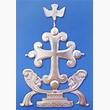

|
 |
 |

The Syro-Malabar Catholic ChurchMembers of this church are direct descendants of the Thomas Christians that the Portuguese encountered in 1498 while exploring the Malabar coast of India (now the state of Kerala). As mentioned above [see Thomas Christians], they were in full communion with the Assyrian Church in Persia. But they greeted the Portuguese as fellow Christians and as representatives of the Church of Rome, whose special status they had continued to acknowledge despite centuries of isolation.
In general, however, the Portuguese did not accept the legitimacy of local Malabar traditions, and they began to impose Latin usages upon the Thomas Christians. At a synod held at Diamper in 1599 under the presidency of the Portuguese Archbishop of Goa, a number of such latinizations were adopted, including the appointment of Portuguese bishops, changes in the Eucharistic liturgy, the use of Roman vestments, the requirement of clerical celibacy, and the setting up of the Inquisition. This provoked widespread discontent, which finally culminated in a decision by most Thomas Christians in 1653 to break with Rome. In response, Pope Alexander VII sent Carmelite friars to Malabar to deal with the situation. By 1662 the majority of the dissidents had returned to communion with the Catholic Church.
European Carmelites would continue to serve as bishops in the Syro-Malabar Church until 1896, when the Holy See established three Vicariates Apostolic for the Thomas Christians (Trichur, Ernakulam and Changanacherry), under the guidance of indigenous Syro-Malabar bishops. A fourth Vicariate Apostolic (Kottayam) was established in 1911. In 1923 Pope Pius XI set up a full-fledged Syro-Malabar Catholic hierarchy.
This new autonomy coincided with a strong revival of the church. While in 1876 there were approximately 200,000 Syro-Malabar Catholics, this number had more than doubled by 1931. By 1960 there were nearly one and one half million faithful, and today they number almost four million. Vocations to the priesthood and religious life have been very strong. Statistics issued by the Vatican in 2007 indicate that in India, the church had 3,024 secular priests, 2,258 religious priests, 1,950 religious brothers, and an astonishing 33,365 women religious. There were nine Syro-Malabar male clerical religious orders and three institutes for brothers, along with nine Latin religious orders that had Syro-Malabar provinces. There were also 38 female religious orders. The Syro-Malabar Church has three major seminaries: St. Joseph's Pontifical Seminary in Mangalapuzha, Aluva; St. Thomas Apostolic Seminary in Vadavathoor, Kottayam; and Good Shepherd Major Seminary in Kunnoth, Tellicherry. There are also eparchial major seminaries in Satna and Thrissur, and 11 seminaries under the direction of religious orders.
In 1934 Pope Pius XI initiated a process of liturgical reform that sought to restore the oriental nature of the heavily latinized Syro-Malabar rite. A restored eucharistic liturgy, drawing on the original East Syrian sources, was approved by Pius XII in 1957 and introduced in 1962. Despite a reaffirmation of the main lines of the 1962 rite by the Oriental Congregation in 1985, however, there has been strong resistance to this reform. The majority of Syro-Malabar dioceses still use a rite that in externals is hardly distinguishable from the Latin Mass. In January 1996 Pope John Paul II presided over the opening of a special synod of bishops of the Syro-Malabar Church in Rome which was to attempt to overcome factional disputes that have centered on the proposed liturgical reforms. In 1998 Pope John Paul II gave the Syro-Malabar bishops full authority in liturgical matters in a further effort to facilitate a resolution of the dispute. To promote useful discussion of these questions, the Syro-Malbar Church established a Liturgical Research Center at the Major Archiepiscopal Curia in 1999. By the end of 2006, it had organized 28 research seminars and published a number of scholarly studies on liturgical matters.
Until recently there was no single head of the Syro-Malabar Catholic Church, but two metropolitan dioceses (Ernakulam and Changanacherry) of equal rank. On December 16, 1992, Pope John Paul II raised the Syro-Malabar Church to Major Archepiscopal rank and appointed Cardinal Antony Padiyara of Ernakulam-Angamaly as the first Major Archbishop. He retired in 1996, and was succeeded by Archbishop Varkey Vithayathil in December 1999. Archbishop Vithayathil, who was made a Cardinal in 2001, passed away on April 1, 2011. On the following May 24, the Syro-Malabar Bishops’ Synod elected Bishop George Alencherry of Thuckalay as the new Major Archbishop. He was confirmed in office by Pope Benedict XVI the following day, and was installed on May 29.
The presence of the Syro-Malabar Church was long restricted to Kerala and surrounding areas. But with the emigration of large numbers of faithful to other parts of India in recent decades, the Holy See began in 1977 to establish Syro-Malabar dioceses in other parts of the country where Latin dioceses already existed. Today there are 15 diocese in the Kerala region that make up the proper territory of the Syro-Malabar Church, all under the authority of the Major Archbishop. The bishops of the 10 Indian dioceses outside Kerala are members of the Syro-Malabar Synod of Bishops, but are suffragans of local Latin archdioceses.
In March 2001 Pope John Paul II erected the diocese of St. Thomas of Chicago of the Syro-Malabars, the church’s first diocese outside India. Led by Bishop Jacob Angadiath, who is also Apostolic Visitator for Syro-Malabar Catholics in Canada, the diocese (3009 South 49th Avenue, Cicero, Illinois 60804) has eight parishes and 29 other worshiping communities serving an estimated 100,000 faithful in the country.
Location: India, especially Kerala State
Head: Mar George Cardinal Alencherry (born 1945, elected 2011, cardinal 2012)
Title: Major Archbishop of Ernakulam-Angamaly
Residence: Ernakulam, India
Membership: 3,829,000
Website: www.smcim.org
Last Modified: 30 Mar 2012